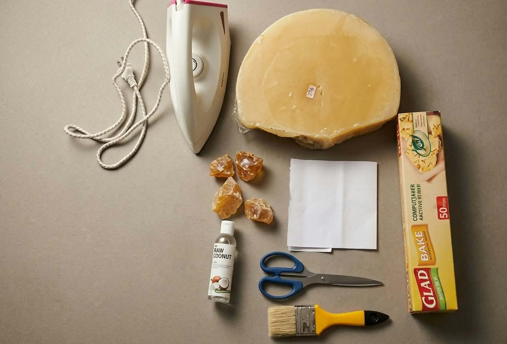
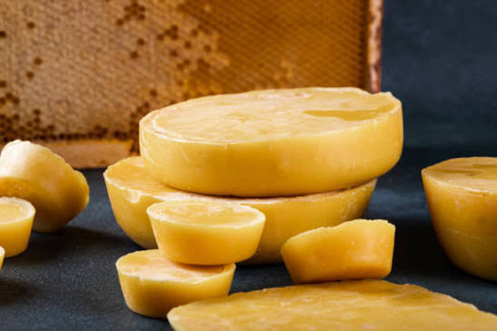

Made to be reused
Unlike single-use coverings that are thrown away after one use, a reusable wrap is intended to be used repeatedly with proper care. This gives us a chance to practice more mindful everyday habits.
A thoughtful alternative starts small
We believe everyday choices can encourage more mindful habits. BUBUNYOG explores a reusable food wrap made with beeswax and coconut-based ingredients, with local materials and our Philippine setting in mind.
Why it matters
The thinking behind the project
Food is part of our everyday lives, and so are the materials we use to store it. We want to explore an option that can be used again instead of relying only on disposable food coverings.
Unlike single-use coverings that are thrown away after one use, a reusable wrap is intended to be used repeatedly with proper care. This gives us a chance to practice more mindful everyday habits.
Our formulation explores beeswax and coconut-based ingredients. We are interested in how these materials can work together in a practical food wrap.
The project draws inspiration from the bee industry in Batangas and the potential of locally available ingredients. We hope to help students appreciate resources and livelihoods in their own communities.

Designed with our setting in mind
A product that works in one place may not behave the same way in another. Temperature and everyday conditions can affect how a wax-based wrap feels and performs. That is why our research focuses on a locally formulated option and its practical usability in our setting.
Rather than assuming that one recipe is already ideal, we are examining the formulation and gathering feedback on how acceptable and useful the finished wrap may be to consumers.
Explore our materialsMore than making a wrap
BUBUNYOG is a student-led sustainability initiative. Through this research, we aim to learn whether our beeswax and coconut-based food wrap can offer practical use and gain consumer acceptance. Our findings—not assumptions—will guide what we share about its performance.